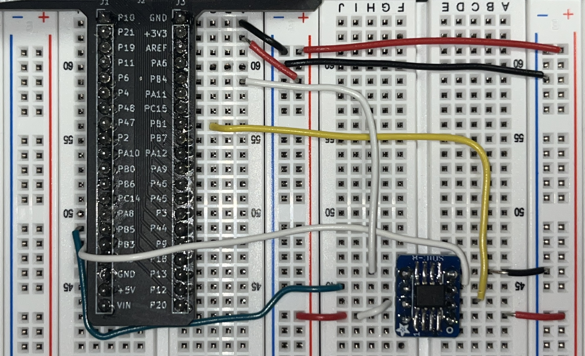
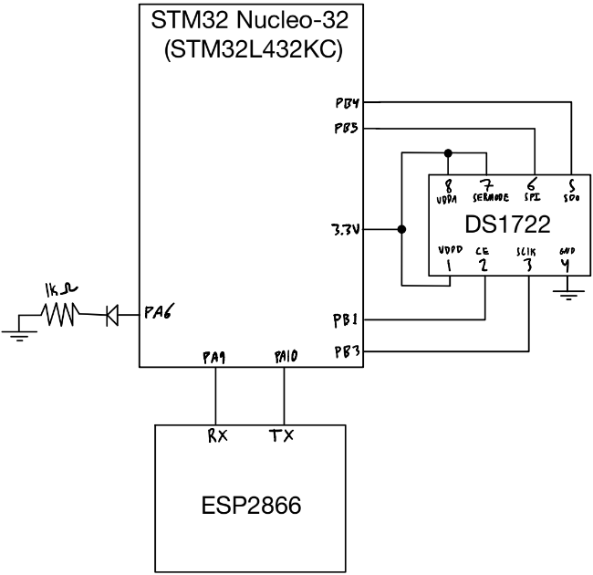
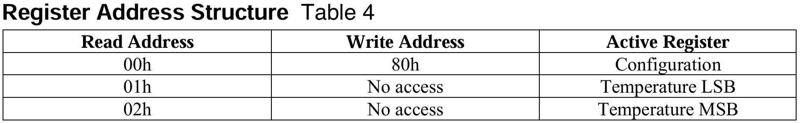
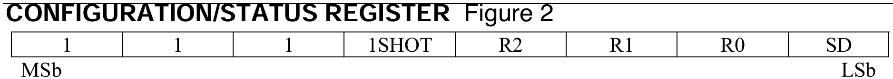
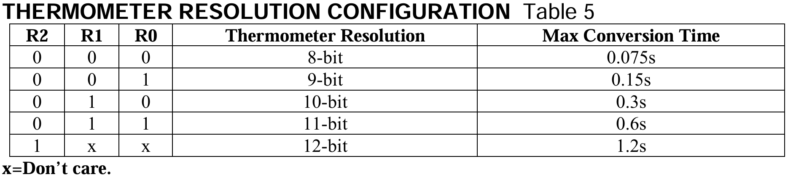
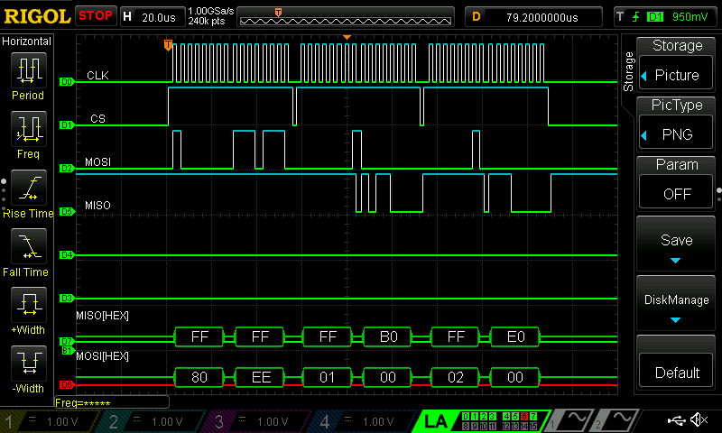

The Internet of Things and Serial Peripheral Interface
Intro & Design Approach
This lab focused on SPI communication between a DS1722 temperature sensor and an STM32 Nucleo-32 board, featuring an onboard STM32L432KC MCU. The goal was to implement a system that displays the temperature on a locally hosted website. The website should be able to update the temperature based on a selected bit-wise resolution (8, 9, 10, 11, or 12 bits). Additionally, the website must include an ON/OFF toggle to control an onboard LED. This setup requires proper configuration of SPI communication, with data being transmitted to and from both the MCU and the temperature sensor.

Design
This section covers the hardware and software design specifics
Hardware
The hardware used to implement this design, as shown in the circuit schematic in Figure 2, handles the SPI communication between the MCU and the temperature sensor, as well as the UART communication between the MCU and the ESP8266 Wi-Fi chip. The schematic also illustrates the simple hardware used to power the LED based on the input from the website.

Software
The SPI1 peripheral on the MCU is used to perform the data transfer. A header file and a .c file were created to initialize and manage the send/receive operations through the SPI1 peripheral. The main.c file then utilized this configuration, along with the send/receive functions, to enable the peripheral, configure the temperature sensor, and retrieve the current temperature values. Simple HTML was written to access the button statuses from the website, which was hosted locally on the Wi-Fi chip.
DS1722 Configuration & Temp Read
The DS1722 temperature sensor can be configured by sending a 0x80 value over the SPI pins. This value signals to the sensor that the next value sent will be applied to the configuration/status register, enabling different temperature resolutions. Based on the resolution requested from the website, the temperature sensor is configured to output the temperature at the corresponding resolution. The mapping of bit values to resolution configureation can be seen below in Figure 3.



Reading the tempurature comes in 2 packets, LSB (least significant byte) and MSB (most significant byte) as seen in the top of Figure 3.
Tempurature Decoding
After reading the LSB and MSB, the value and its sign (positive or negative) must be decoded. Since the full 16-bit temperature value is in two’s complement form, a simple function was written to detect the most significant bit (MSB), which indicates whether the value is negative. If the MSB is set to 1, the temperature is negative, and the most negative value corresponds to -128°C. The remaining 15 bits of the temperature reading are summed, with each bit contributing its base-10 value, to this -128°C baseline, resulting in the final temperature reading.
For positive temperatures, the decoding process is simpler. It follows the same method as the negative temperature decoding, but starts from an initial value of 0°C instead of -128°C.
SPI Verification
An LA (Logic Analyzer) was used to monitor the SPI communication between the MCU and the temperature sensor. In Figure 4 below, the configuration of the temperature sensor is shown along with the MOSI[HEX] value of 0x80 and set to a 12-bit configuration. The MOSI line also requests the LSB and MSB, with respective MOSI[HEX] values of 0x01 and 0x02. The data from the temperature sensor is received over the MISO[HEX] line. In this particular example, the LSB receives a value of EO and the MSB receives a value of 1C.
Temperature changes in different scenarios as shown by the MISO[HEX] line in Figure 5 below, compared to the data in Figure 4 above.

This validates proper SPI communication.
Results
This lab resulted in a fully functional implementation of SPI communication to read temperature values from the DS1722 temperature sensor. The website is fully operational, accurately displaying both positive and negative temperatures at the requested bit resolution. Additionally, the website successfully controls an onboard LED, allowing the user to turn it on and off. Overall, this lab took me about 12 hours to complete.
Reflection
I enjoyed this lab and found the implementation of SPI communication to be relatively straightforward to understand. Interacting with the HTML was a bit of a learning curve, but it became manageable with a small amount of familiarization. I am continually impressed by the speed and accuracy of these microchips and their communication capabilities, which put simple electronic communications into context and motivates me to explore different communication protocols.